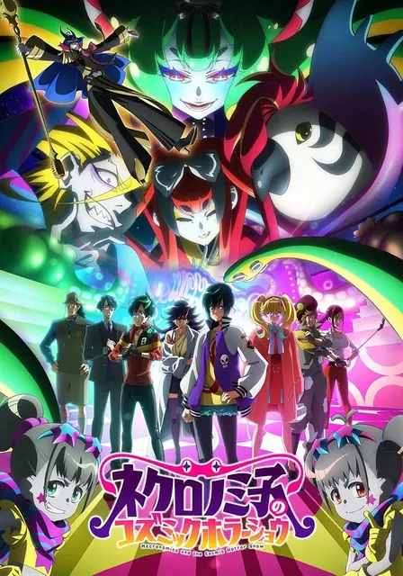

004石纪元 科学与未来 第2部分Dr.STONE SCIENCE FUTURE 第2クールTV · 12话 · 2025-07-10 · 漫画改TV · 12话 · 07-10 · 漫画改奇幻科幻7.62821
006新 吊带袜天使New PANTY & STOCKING with GARTERBELTTV · 13话 · 2025-07-09 · 原创动画TV · 13话 · 07-09 · 原创动画喜剧奇幻7.56939
009我们不可能成为恋人!绝对不行。 (※似乎可行?)わたしが恋人になれるわけないじゃん、ムリムリ!(※ムリじゃなかった!?)TV · 12话 · 2025-07-07 · 来源未知TV · 12话 · 07-07 · 来源未知喜剧恋爱7.411615
017Clevatess-魔兽之王与婴儿与尸之勇者-クレバテス-魔獣の王と赤子と屍の勇者-TV · 12话 · 2025-07-02 · 漫画改TV · 12话 · 07-02 · 漫画改奇幻冒险6.93886
024Silent Witch 沉默魔女的秘密サイレント・ウィッチ 沈黙の魔女の隠しごとTV · 13话 · 2025-07-04 · 轻小说改TV · 13话 · 07-04 · 轻小说改恋爱奇幻6.67264
032卡片战斗先导者 Divinez Deluxe决胜篇カードファイト!! ヴァンガード Divinez デラックス決勝編TV · 12话 · 2025-07-05 · 原创动画TV · 12话 · 07-05 · 原创动画6.544
033转生为第七王子,随心所欲的魔法学习之路 第二季転生したら第七王子だったので、気ままに魔術を極めます 第2期TV · 12话 · 2025-07-09 · 来源未知TV · 12话 · 07-09 · 来源未知奇幻战斗6.42540
041EVERYDAY HOST CLUB 男公关俱乐部的欢乐日常续播えぶりでいホストTV · 24话 · 2025-04-04 · 漫画改TV · 24话 · 04-04 · 漫画改喜剧职场5.8639
055异世界默示录米诺戈拉 ~从灭亡的文明开始的世界征服~異世界黙示録マイノグーラ ~破滅の文明で始める世界征服~TV · 13话 · 2025-07-06 · 轻小说改TV · 13话 · 07-06 · 轻小说改奇幻冒险5.21363
059转生成自动贩卖机的我今天也在迷宫徘徊 第二季自動販売機に生まれ変わった俺は迷宮を彷徨う 2nd seasonTV · 12话 · 2025-07-02 · 轻小说改TV · 12话 · 07-02 · 轻小说改喜剧恋爱5.1605
063衣衫褴褛的大小姐受到姐姐前未婚夫的宠爱ずたぼろ令嬢は姉の元婚約者に溺愛されるTV · 12话 · 2025-07-04 · 轻小说改TV · 12话 · 07-04 · 轻小说改恋爱异世界5.0301
074被驱逐出勇者队伍的白魔导师, 被S级冒险者捡到 ~这个白魔导师超规格~勇者パーティーを追放された白魔導師、Sランク冒険者に拾われる ~この白魔導師が規格外すぎる~TV · 12话 · 2025-07-10 · 轻小说改TV · 12话 · 07-10 · 轻小说改恋爱奇幻4.1968
076虽然我是白豚贵族,但因为我有前世的记忆,所以我在养育弱小的弟弟白豚貴族ですが前世の記憶が生えたのでひよこな弟育てますTV · 12话 · 2025-07-06 · 轻小说改TV · 12话 · 07-06 · 轻小说改奇幻异世界3.7223
077涅库罗诺美子的宇宙恐怖秀ネクロノミ子のコズミックホラーショウTV · 12话 · 2025-07-01 · 原创动画TV · 12话 · 07-01 · 原创动画喜剧奇幻3.4950
002剧场版 鬼灭之刃 无限城篇 第一章 猗窝座再袭劇場版 鬼滅の刃 無限城編 第一章 猗窩座再来MOVIE · 1话 · 2025-07-18 · 漫画改MOVIE · 1话 · 07-18 · 漫画改奇幻冒险7.47096
004剧场版 Idol光之美少女你与我♪ 久等了!为你献上闪耀舞台!映画キミとアイドルプリキュア♪ お待たせ!キミに届けるキラッキライブ!MOVIE · 1话 · 2025-09-12 · 原创动画MOVIE · 1话 · 09-12 · 原创动画音乐百合5.9138
005与爱丽丝梦游仙境 -Dive in Wonderland-不思議の国でアリスと -Dive in Wonderland-MOVIE · 1话 · 2025-08-29 · 来源未知MOVIE · 1话 · 08-29 · 来源未知奇幻冒险5.6278
008蜡笔小新:灼热的春日部舞者们クレヨンしんちゃん 超華麗!灼熱のカスカベダンサーズMOVIE · 1话 · 2025-08-08 · 来源未知MOVIE · 1话 · 08-08 · 来源未知冒险5.4118
009远井同学想度过青春!笨蛋与手机与浪漫遠井さんは青春したい!「バカとスマホとロマンスと」MOVIE · 1话 · 2025-07-18 · 原创动画MOVIE · 1话 · 07-18 · 原创动画喜剧校园5.035